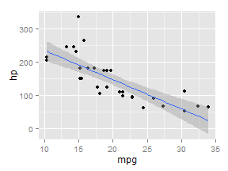

<!doctype html>
My first Shiny app <!--[if lt IE 9]> <![endif]-->
My first Shiny app
A very simple linear model
Bas van de Kerkhof
Stop looking!
Always wanted to perform simple linear regression?
But you don't have the skills to do so?
Look no further!
Check out: https://bvdk.shinyapps.io/myApp
Simple linear regression
The app is specially developed to perform a simple linear regression on the mtcars dataset.
You can choose a predictor and a dependent variable and the linear regression analysis is performed!
What does it do?
The app calculates the correlation coefficient between the chosen variables.
It also shows the plot of the dependent variable vs the predictor.
You can even indicate if you want the regression line to be plotted!
Simple example
Lets use the variables mpg as predictor and hp as dependent variable and calculate the correlation coeffifienct and plot the variables with a regression line.
library(ggplot2)
ggplot(data = mtcars, aes(x = mpg, y = hp)) +
geom_point() + geom_smooth(method="lm")

cor(mtcars$mpg, mtcars$hp)
## [1] -0.7761684